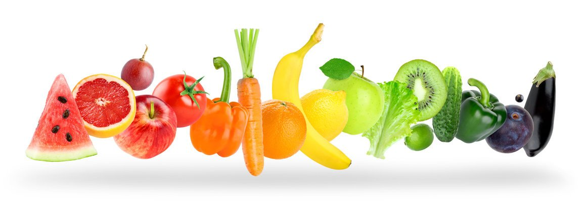

Diets play a pivotal role in shaping our physical health, mental well-being, and overall quality of life. They are not just about restriction or weight management; instead, they encompass a wide spectrum of eating patterns and approaches aimed at achieving specific health goals. Let's delve into the significance of diets in our lives:
Health Benefits: Many individuals adopt vegetarian diets for health reasons. Research suggests that vegetarians tend to have lower rates of heart disease, high blood pressure, type 2 diabetes, and certain types of cancer. Vegetarian diets are often rich in fruits, vegetables, whole grains, and legumes, which are packed with essential nutrients and fiber.
Ethical and Environmental Concerns:Some people choose vegetarianism due to ethical concerns about animal welfare. They may avoid meat products because of the treatment of animals in the meat industry, including factory farming practices. Additionally, the livestock industry has a significant environmental impact, contributing to deforestation and greenhouse gas emissions. Choosing a vegetarian diet can be seen as a way to reduce one's carbon footprint.
Religious or Cultural Beliefs: Certain religions, such as Jainism and some forms of Buddhism and Hinduism, advocate for vegetarianism as a way to practice non-violence and compassion. In some cultures, vegetarian diets are traditional and have been followed for centuries.
Nutrient Powerhouses:Fruits are packed with a wide range of essential nutrients, including vitamins (like vitamin C, vitamin A, and various B vitamins), minerals (such as potassium and magnesium), and dietary fiber. These nutrients are vital for overall health, supporting various bodily functions.
Antioxidant Protection: Fruits are rich in antioxidants, which help combat free radicals and oxidative stress in the body. Antioxidants play a significant role in reducing the risk of chronic diseases, including heart disease and cancer.
Heart Health: Consuming fruits, especially those high in potassium, can help lower blood pressure, reduce the risk of stroke, and promote heart health. The fiber in fruits also contributes to healthier cholesterol levels.